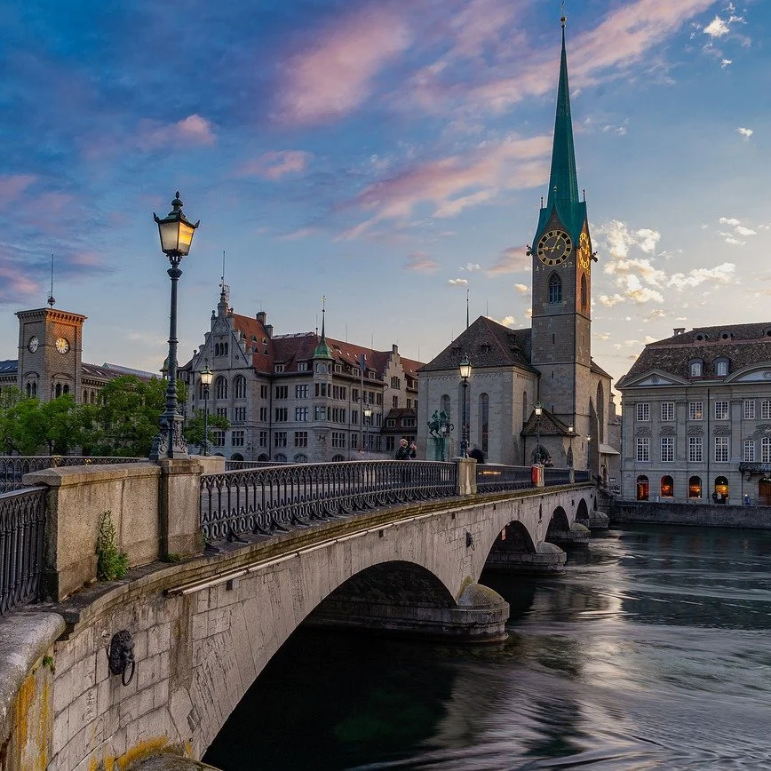
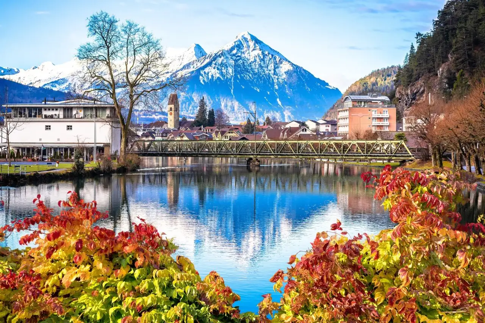

Vamos conhecer a Suíça
A Suíça é um país montanhoso da Europa Central com um grande número de lagos, vilas e picos elevados dos Alpes. Suas cidades têm bairros medievais e monumentos como a torre do relógio Zytglogge, na capital Berna, e a ponte de madeira de Lucerna. O país também é conhecido por suas estações de esqui e trilhas. Os setores bancário e financeiro são muito importantes para a economia do país, e os chocolates e relógios suíços têm fama no mundo todo.

Berna

Zurique

Lucerna

Genebra
Planejamento e Dicas de Viagem
☀️ ❄️ Melhor época para visitar
O verão é excelente para trilhas, passeios de barco e aproveitar os lagos, enquanto o inverno atrai esquiadores do mundo todo para os Alpes.
🚆 Transporte e Locomoção
O sistema ferroviário é extremamente pontual e permite explorar o país inteiro sem alugar carro. É possível planejar roteiros oficiais e conferir dicas no portal Suíça Turismo.
💰 Custos e Economia
É considerado um país com custo de vida alto, mas é possível economizar utilizando mercados locais e planejando com antecedência. O mês de novembro costuma registrar passagens aéreas mais em conta a partir do Brasil.